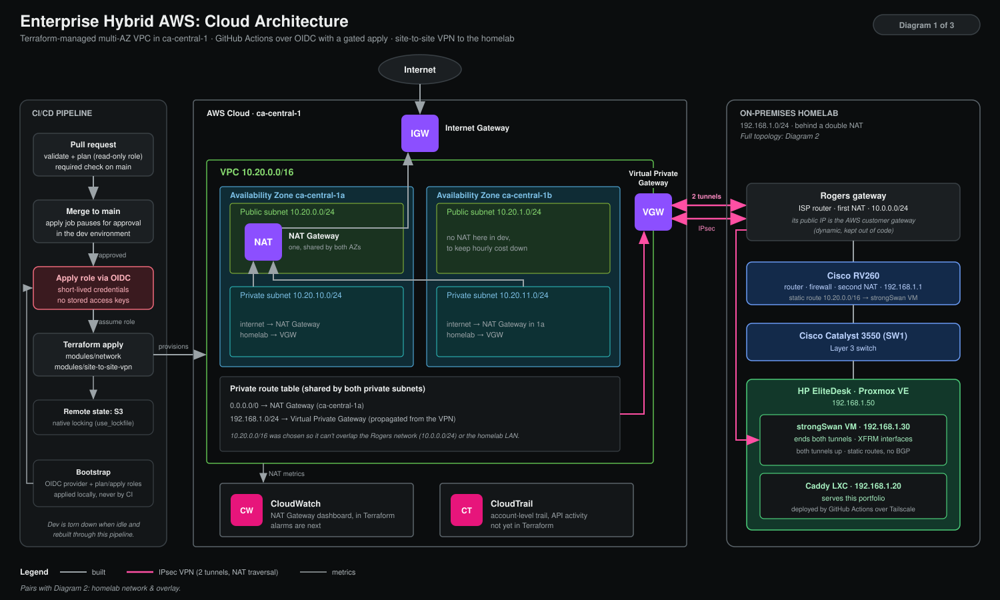

Open to Cloud, DevOps & SRE internships · Winter & Summer 2027
Infrastructure that rebuilds from code.
CS student at Laurier building AWS environments in Terraform, deployed by GitHub Actions without long-lived keys.
- 3.5h → 7mFull regression time after I built AGCO's first Playwright suite
- 4 of 6QA teammates now writing their own automated tests
- 0Long-lived AWS keys. CI deploys through GitHub Actions OIDC
About
CS student (graduating Dec 2027) who'd rather learn how a system fails than just read about it. Most of my time goes into Terraform, AWS, and a homelab I keep rebuilding on purpose: deploying, breaking and fixing infrastructure until I understand it end to end. Based between Waterloo and Brampton, ON.
Experience & skills →Five projects, from Terraform to TypeScript
Rebuilt on demand
Enterprise Hybrid AWS Environment
Rebuilt from code. Zero long-lived keys.
A multi-AZ AWS VPC with a site-to-site VPN to my homelab, defined in Terraform and deployed by GitHub Actions over OIDC. Every pull request gets a plan, and applies wait for approval.
- Terraform
- AWS
- GitHub Actions (OIDC)
- strongSwan

Live
Network & Virtualization Homelab
Self-hosted, with zero ports opened.
A Proxmox host behind a Cisco RV260 and Catalyst 3550 that serves this site. Remote admin runs over a Tailscale subnet route and public traffic through Funnel, so the router has no open ports.
- Proxmox VE
- Cisco IOS
- Tailscale
- Docker
In development
CloudGuard: Agentic AWS Operations Assistant
Catch the bill before it catches you.
Early development: read-only boto3 scans under a least-privilege IAM role, then detection rules for cost waste and security misconfigurations, then an AI agent that investigates findings and proposes fixes for human approval.
- Python
- boto3
- LLM agents (tool calling)
- Terraform
- FastAPI
Hackathon
UniWallet: Student Budget Forecaster
Know where you stand before payday.
A hackathon app built with Shayan Baig. I built the backend: a TypeScript REST API on Postgres where rules do the money math and a GPT-4o-mini coach only explains it, so it can't invent numbers.
- TypeScript
- Express
- Prisma
- PostgreSQL
- OpenAI API
- Next.js
Live
Portfolio Site
Every push ships. Nothing else gets in.
Every push to main deploys to a Caddy container in my homelab, through an ephemeral CI node that can reach one host and a deploy user that can only run rsync.
- GitHub Actions
- Tailscale ACLs & Funnel
- rsync
- Caddy